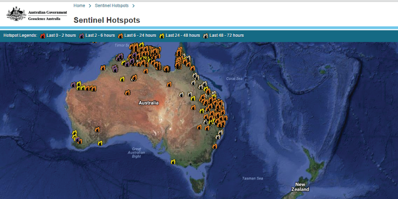
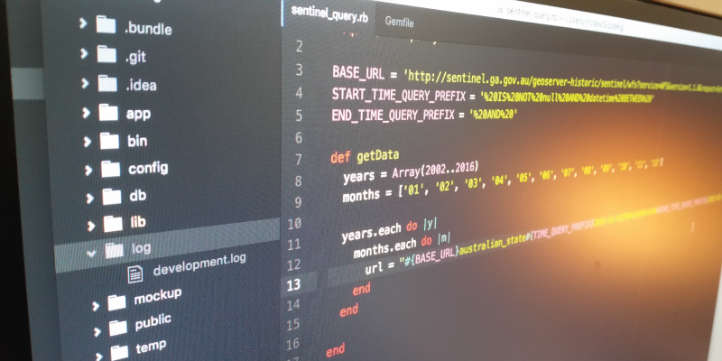
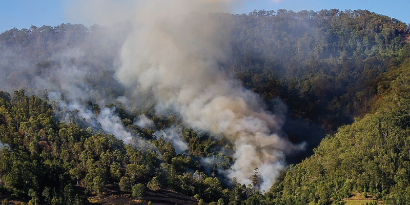
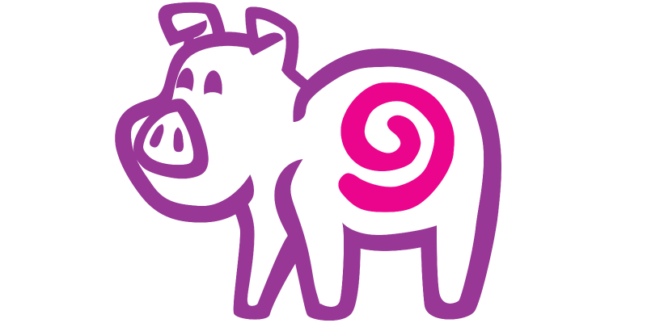
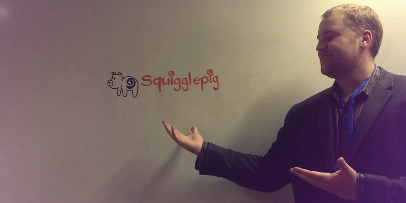
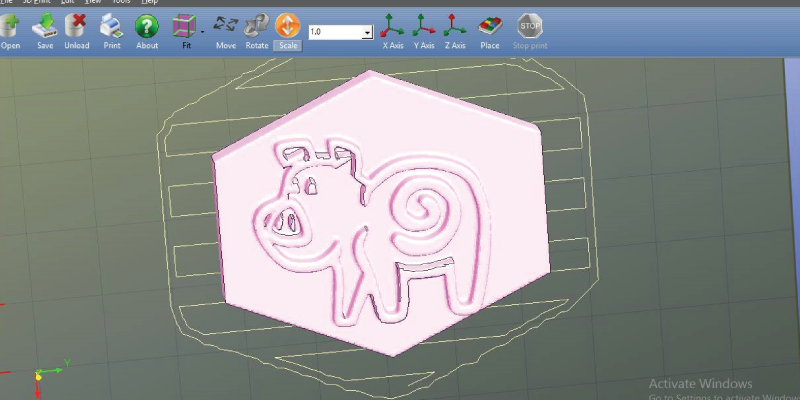
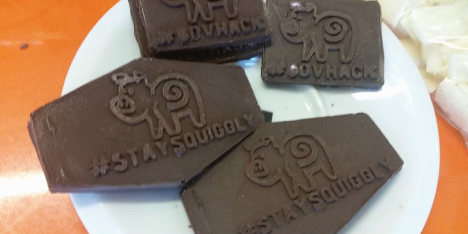

Web App & Big Data
From the website: Data 61 and Geoscience Australia's "Sentinel HotSpots provides an important and consistent overview for management of fires across the country." The data is traditionally used for land and bushfire management. However, data older than 10 days is purged from the public-facing FTP service.

We have combined this data with other Government datasets to build a reporting and forecasting tool for bushfire data. We are also using this data as the foundation of our public facing API that makes the entire dataset available to others. This includes more than 5.5million data points that have been collected since 2002. We achieved this by mimicking the outgoing network requests from the Sentinel application.

We have a range of data visualisations available on our web app, including the percentage of the country on fire at any one date, and the threat level (or even bushfire intensity) of any localised fire. This data is being used to dictate the height of a flame in the novel hardware component of our project.
You can access our source code at our GitHub repository! Check it out.
Data, Electronics, Fire!
Our SizzleRig web application is great for software-based bushfire visualisation, reporting, and management. But fire itself is visually exciting; humanity's great perennial friend and foe.

Our web app is designed to help insurers, policymakers, and citizens make informed choices about their activities in bushfire-prone areas. We decided to visualise and manage fire in a literal way through building the hardware aspect of this project.
Photo of SizzleRig
Our gas-fed device is mechanically operated via an Arduino controller. A column of fire burns bright within a perspex housing, its height controlled by the software. You can see the unit in action through this video.
Video goes here
The casing for the unit is made from MDF. It contains a perspex mounting rig for the Arduino and stepper motors. The gas flow is controlled by safe, industry-standard fittings. However, we absolutely recommend you work with a professional if you intend to make this at home.
3D Printing & Mold-Making
Team SquigglePig is truly enamoured of its mascot. We wanted to share him with other GovHack Canberra participants.

First we whiteboaraded a logo, which was then vectorised.

The vector-formatted file was then converted into an extruded piece in a CAD file for 3D printing.

This was moulded using food-safe silicone, which we used to make chocolate casts of our character, promoting the #GovHack and #StaySquiggley hashtags.
